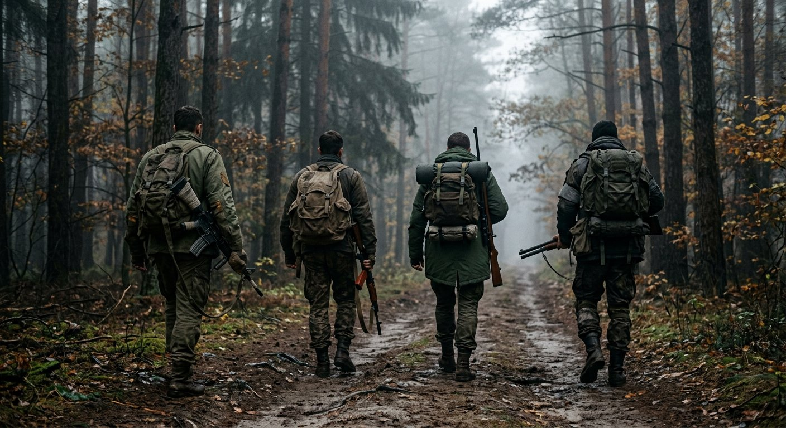
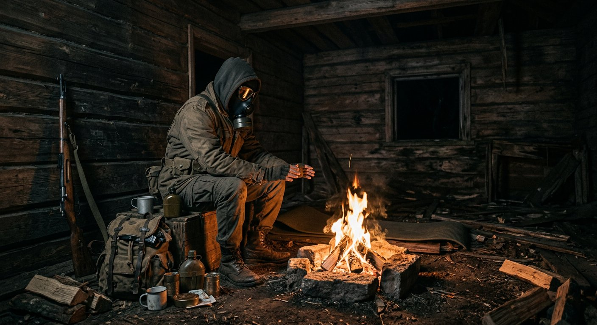
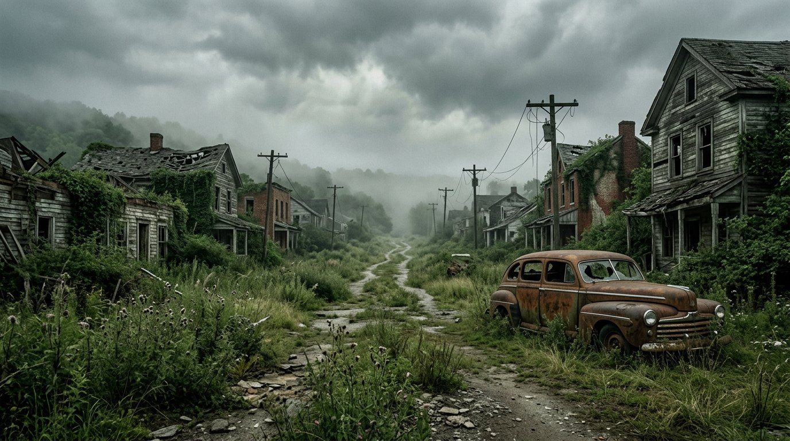
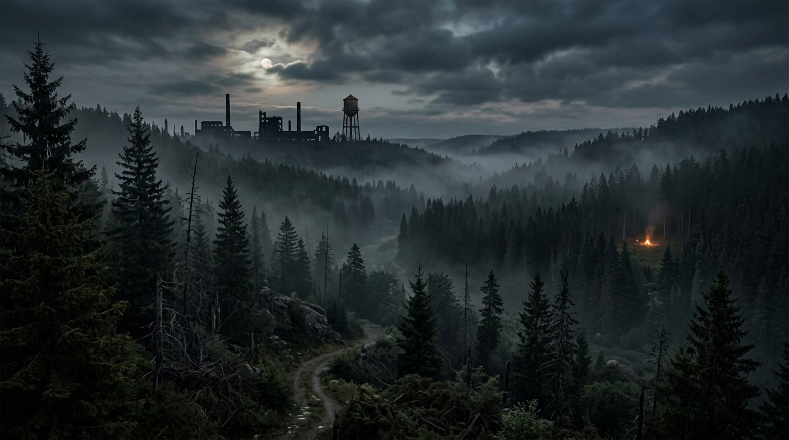

PVP
Tiro, tática e comunicação. No PVP cada chamada importa: flanquear, cobrir o parceiro e saber a hora de recuar. Aqui ninguém joga lone wolf — a squad inteira volta pra casa.
Clã de DayZ • PVP & PVE
Sobreviver sozinho é possível.
Sobreviver junto é KSS.
Quem somos
O KSS nasceu da parceria de 3 amigos que compartilhavam a mesma paixão: o DayZ. O que começou com três sobreviventes tentando não morrer de fome em Chernarus virou algo muito maior.
Com o tempo, cada player que cruzou o nosso caminho deixou de ser um desconhecido e virou companheiro de squad — e de squad para amigo. Foi assim, matéria-prima e fogueira, que o clã cresceu.
Hoje, o que nos une vai além do jogo: é a irmandade que só o apocalipse sabe forjar. Seja no PVP ou no PVE, o KSS existe para provar que o melhor loot do DayZ não está em nenhuma base militar — são as amizades que a gente constrói pelo caminho.
Nossos pilares
Tiro, tática e comunicação. No PVP cada chamada importa: flanquear, cobrir o parceiro e saber a hora de recuar. Aqui ninguém joga lone wolf — a squad inteira volta pra casa.
Explorar, caçar, construir e estocar. Levantar base, organizar o loot e manter todo mundo alimentado é tão gratificante quanto vencer um tiroteio — e exige o mesmo trabalho em equipe.
O pilar mais importante. O KSS existe porque o DayZ é melhor com amigos. Ninguém fica para trás, ninguém é deixado sem arma, sem comida ou sem um revive. Clã de verdade é família.
Recrutamento aberto
Procuramos players que curtam sobrevivência de verdade — no PVP, no PVE ou nos dois. Skill a gente ensina. O que não tem preço é vontade de jogar em equipe.
Use o botão de convite em qualquer lugar deste site.
Conte pra gente quem você é, seu estilo de jogo e sua experiência no DayZ.
Algumas sessões junto com o clã pra todo mundo se conhecer em campo.
Receba suas tags e faça parte oficialmente da irmandade.
Conduta
Regras simples, pra vida em grupo funcionar. Quem não seguir, não veste o patch.
Zero tolerância com toxicidade, preconceito ou briga interna. Aqui é família.
Cheats, exploits e glitches mancham o nome do clã. É banimento imediato, sem discussão.
Loot se compartilha, companheiro caído se salva. Ninguém abandona ninguém.
Em call, mantenha o canal limpo durante as operações. Avise quando estiver disponível pra jogar.
Dentro ou fora do servidor, suas atitudes representam o clã. Jogue com honra.
No fim do dia, é sobre amigos e boas histórias pra contar na fogueira.
Em campo
Momentos do clã em Chernarus, Livonia e onde quer que o apocalipse nos leve.




Quer ver seu print aqui? Mande no canal do Discord que a gente adiciona!
Contato
O recrutamento, as operações, a resenha e as histórias de guerra acontecem no nosso Discord. É lá que o KSS vive quando ninguém está online em Chernarus.
Entrar no Discord do KSS